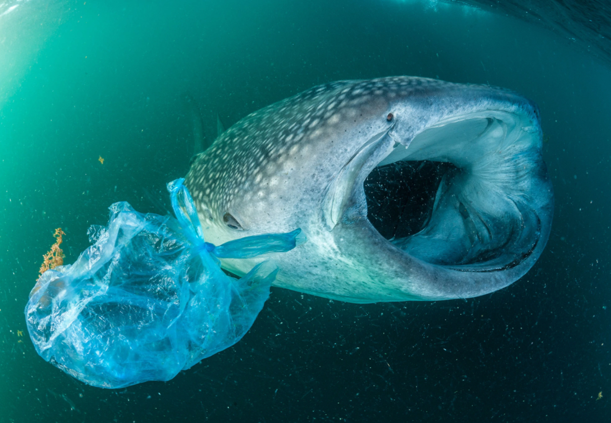
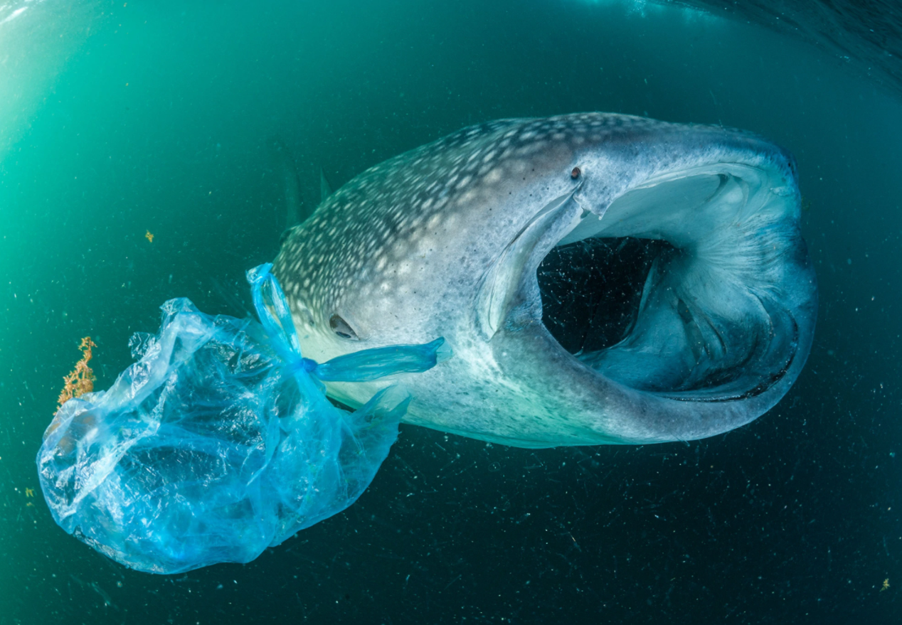
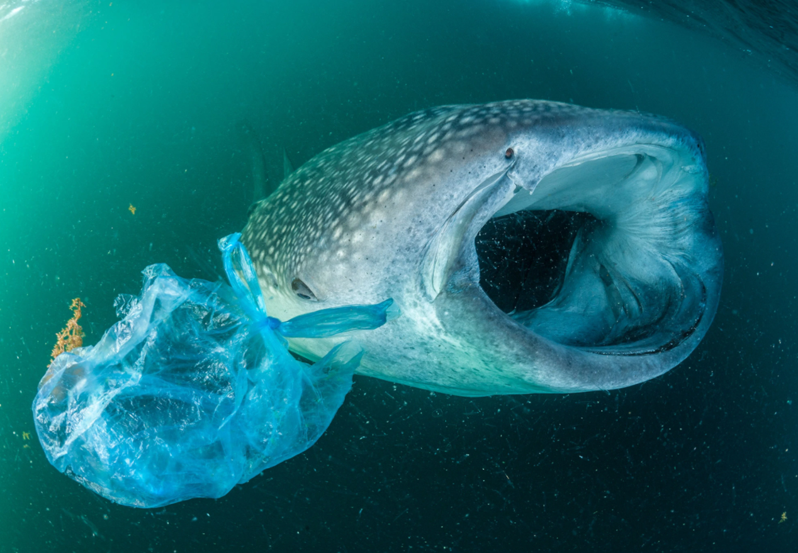

{kind=link}
{kind=link}
 

Le acque diventano sempre più la discarica della Terra. Tappi e bottiglie e cannucce e scatole delle sigarette e imballaggi e posate e molti altri rifiuti stipati in un camion che ogni minuto si svuota nell'oceano o nel mare: è emergenza in tutto il mondo.
Lavoro svolto da:
Alessio Amorosi
La plastica, il principale inquinante di mari e oceani:
Secondo le stime riportate dal WWF 86 milioni di tonnellate di plastica (86 000 000 000kg) sono presenti nei nostri oceani e mari, noi però possiamo percepire soltanto il 15% del totale che si scaglia sulle nostre spiagge: il resto o compromette l'ambiente del fondale marino o addirritura, dato che la maggior parte è meno densa dell'acqua, viene trasportato dalle correnti per lunghe distanze fino a bloccarsi in un vortice. Rifiuto dopo rifiuto si forma un ingorgo che da vita alle "isole di plastica":
Invece attualmente la ricerca per risolvere questa crisi si sta concentrando sullo sviluppo delle bioplastiche: i nuovi polimeri (sostanze ad elevata massa molare composta da unità strutturali ripetitive) sono riconoscuti da alcuni microrganismi che li degrada liberandone l'energia e generando acqua, biomassa ed anidride carbonica.

La plastica ha preso all'amo il mondo; cronache di uno sterminio silenzioso:
Entro il 2050 il 99% degli uccelli avranno plastica nelle proprie viscere.
Almeno 44 specie marine sono state intrappolate nella plastica.
50.000 animali di 116 specie diverse nel Mediterraneo hanno ingerito plastica.
La Terra sta venendo soffocata dalla plastica:
balene che affiorano con sacchi della spazzatura scartati che esplodono dallo stomaco e
uccelli che costruiscono case con vetri rotti e pezzi di plastica e addirritura
una vecchia borsa della spesa trovata a migliaia di piedi sotto la superficie dell'oceano nella trincea più profonda del mondo...
Si sa che quasi 700 specie, comprese quelle in via di estinzione, ne sono state colpite. Alcuni sono visibilmente danneggiati e il risultato è spesso fatale:
strangolati da reti da pesca abbandonate o soffocati o altri uccisi per blocco gastrointestinale o
per non riuscire più ad assorbire il nutrimento dal cibo
.
Molti altri sono probabilmente danneggiati in modo invisibile.
Il problema non è limitato alla fauna marina: il documentario "a plastic ocean"
avverte che alcuni ricercatori hanno addirritura trovato 276 pezzi di plastica in un solo uccello, ossia circa il suo 15% di massa totale:
come se noi
esseri umani avessimo dai 6 kilogrammi ai 8 kilogrammi nel nostro corpo
.
Nel novembre 2019, un giovane capodoglio è stato trovato morto su una spiaggia dell'isola di Harris, in Scozia. Un'autopsia ha trovato un groviglio di rifiuti da 100 kg nel suo stomaco